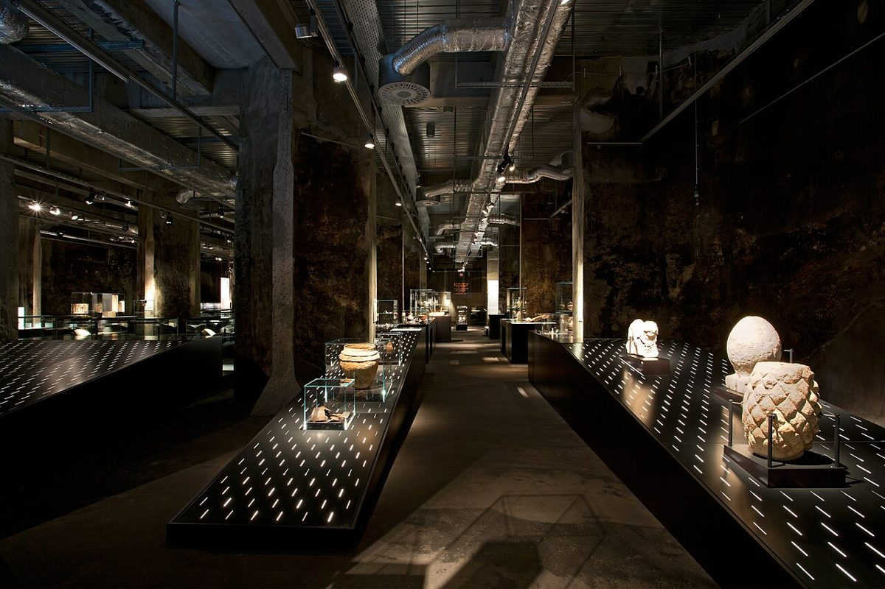

探索德国鲁尔区卓伦遗址：工业遗产与文化之旅

鲁尔区卓伦遗址（Zollverein）是德国最具标志性的工业遗产之一，位于德国的鲁尔区。这里曾经是欧洲最大的煤矿和炼焦厂，如今被改造为一个令人惊叹的文化与艺术中心。如果你想体验德国的工业历史与现代文化的碰撞，卓伦遗址绝对是一个不可错过的地方。
如何前往卓伦遗址
卓伦遗址位于埃森市（Essen），交通十分便利。如果你从德国其他城市出发，可以选择乘坐火车到达埃森中央火车站，然后转乘公共汽车或有轨电车。从埃森市中心的公共交通站点到卓伦遗址只需短短几分钟。此外，自驾游也是一个不错的选择，景区周边设有充足的停车位。
最佳旅行时间
卓伦遗址全年开放，但最佳旅行时间是春夏季节。此时天气宜人，适合在户外漫步并欣赏遗址的建筑与景观。秋冬季节虽然较冷，但节日氛围浓厚，特别是有圣诞市场等活动，增添了独特的魅力。
卓伦遗址的五大亮点
1. 煤矿工业区（Zollverein Coal Mine Industrial Complex）
这里曾是世界上最大、最现代化的煤矿之一，如今被联合国教科文组织列为世界遗产。你可以参观煤矿设施，了解煤炭开采的历史与技术。
2. 卓伦设计博物馆（Red Dot Design Museum）
这座博物馆位于遗址内的锅炉房中，展示了全球顶尖的设计作品，是设计爱好者的天堂。
3. 鲁尔博物馆（Ruhr Museum）
鲁尔博物馆通过丰富的展品和互动展览，讲述了鲁尔区的历史与文化。博物馆建筑本身就是工业遗产的一部分。
4. 矿井塔（Pithead Tower）
矿井塔是卓伦遗址的标志性建筑，你可以乘坐电梯到达塔顶，俯瞰整个遗址和周边的鲁尔区景观。
5. 文化活动与展览
卓伦遗址定期举办各种文化活动、展览和音乐会，尤其是夏天的露天电影和冬季的圣诞市场，氛围独特。
鲁尔区的美食推荐
在卓伦遗址参观之余，别忘了品尝鲁尔区的特色美食。这里有很多典型的德国菜肴，比如香肠、猪肘和土豆沙拉。此外，鲁尔区也以其多元文化的餐饮场景著称，你可以在当地找到土耳其烤肉、意大利披萨等国际美食。
总结
鲁尔区卓伦遗址不仅是德国工业历史的象征，也是文化与艺术的交汇点。无论是历史爱好者、艺术迷还是美食爱好者，这里都能让你满载而归。计划你的鲁尔区之旅，体验这片工业遗产的独特魅力吧！
Haiktec
Text mit KI erstellt und automatisch geprueft.